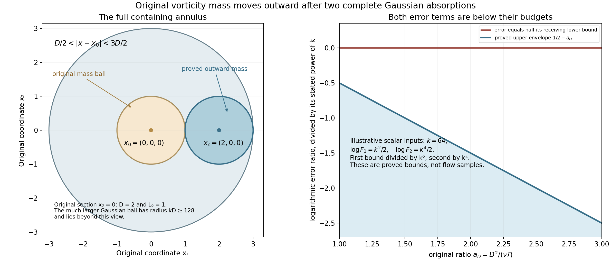
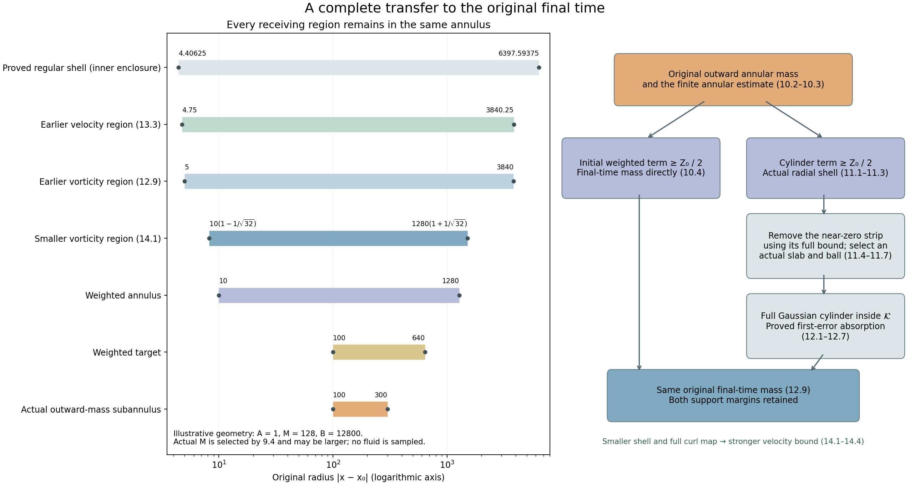

Outward vorticity mass and the final-time transfer
The preceding lesson supplied original vorticity mass on an actual regularity interval. We now move that mass to a distant annulus and then to the original final time. Every use of a weighted heat estimate includes its actual time interval, spatial support, coefficients and complete error terms.
The first Gaussian argument has two errors to control: the finite cylinder error and the Gaussian mass outside the receiving ball. Both are explicitly absorbed. The resulting outward mass enters a constructed small annulus. A second weighted estimate gives two cases; we prove the final-time transfer in both, including the complete time-slab and spatial ball selection needed by the second Gaussian argument.
The final curl integration by parts gives a positive integral of the original velocity. Its exact spatial enclosure also gives a smaller mass shell and a strictly stronger velocity bound. Five solved exercises retain variable error budgets, change the longer Gaussian duration, optimize the covering radius and initial Gaussian time, and enlarge the derivative neighborhood to its actual available margins.
Read Original vorticity mass and a regularity interval, Critical velocity tails and weighted heat estimates, Selecting an annulus and controlling local velocity, and Interior vorticity bounds on an actual annulus for the complete receiving inputs. The human comparison is Terence Tao, Quantitative bounds for critically bounded solutions to the Navier–Stokes equations, version 2, original author article.tex 1290–1418.
This lesson proves the complete finite transfer. The general large critical-velocity endpoint still requires the original annulus selection to be evaluated uniformly over its scale family before summing the velocity integrals.
1. Actual intervals and the full Gaussian
Keep the original unforced equation
\[ \partial_tu+(u\cdot\nabla)u+\nabla p=\nu\Delta u,\qquad \operatorname{div}u=0,\quad \omega=\nabla\times u,\quad\nu>0. \tag{1.1} \]All fields and constants are the ones constructed in NS-FLUID-17. In particular its actual interval \(I'=[t'-T',t']\) has \(T'>0\), and throughout that interval and the entire original space,
\[ \begin{gathered} |u|\leq \frac12\sqrt{\frac{\nu}{C_0T'}},\qquad |\nabla u|\leq\frac1{2C_0T'},\qquad C_0\geq2,\\ |\omega|\leq\Omega:=X_6,\qquad |\nabla\omega|\leq G:=G_\omega,\qquad \int_{B(x_0,L_0)}|\omega(t,x)|^2\,dx\geq E_0>0 . \end{gathered} \tag{1.2} \]Here \(L_0=(LB+2R/q)\sqrt S\) and \(E_0=b^2q/(4C_K^2\sqrt S)\) are the actual original-center mass data, not a newly postulated regularity or concentration assumption.
Fix once and for all the physical duration \(\mathcal T=T'/2\). For every actual endpoint \(t_e\in[t'-T'/4,t']\), the interval \([t_e-\mathcal T,t_e]\) lies inside \(I'\): its earliest possible time is \(t'-3T'/4\). For any spatial center \(x_c\), set
\[ D=|x_c-x_0|,\qquad {\cal U}(s,y)=\omega(t_e-s,x_c+y),\quad0\leq s\leq\mathcal T. \tag{1.3} \]The complete reversed vorticity equation is
\[ (\partial_s+\nu\Delta_y){\cal U} =u(t_e-s,x_c+y)\cdot\nabla_y{\cal U} -{\cal U}\cdot\nabla u(t_e-s,x_c+y) \]1.2 consequently gives the finite Gaussian differential inequality with zero residual on every finite spatial ball, at the unchanged viscosity \(\nu\) and duration \(\mathcal T\). For example \(|u|\leq\sqrt{\nu/(C_0\mathcal T)}\) and \(|\nabla u|\leq(C_0\mathcal T)^{-1}\), since \(\mathcal T=T'/2\). All constants are uniform in \(t_e\) and \(x_c\).
2. Constants for the two error bounds
Use exactly the smooth cutoff of NS-FLUID-10 (4.1):
\[ \begin{gathered} b_{\rm cut}(s)= \begin{cases}e^{-1/s},&s>0,\\0,&s\leq0,\end{cases}\quad \chi_{\rm cut}(s)= \frac{b_{\rm cut}(1-s)} {b_{\rm cut}(1-s)+b_{\rm cut}(s-1/4)},\quad \theta_{\rm cut}(s)=\chi_{\rm cut}(s^2)\ (s\geq0),\\ \beta_1=\|\theta_{\rm cut}'\|_\infty,\quad \beta_2=\|\theta_{\rm cut}''\|_\infty,\quad d_B=\beta_2+4\beta_1,\\ K_B=\max\{9+3d_B^2/4000^2,\ 9+12\beta_1^2/4000\}, \qquad J_B=\max\{2,\beta_1^2/2000\},\\ A_G=20\,3^{3/2},\qquad B_G=\frac5{\mathrm e}(K_B+40J_B),\qquad v_3=4\pi/3. \end{gathered} \tag{2.1} \]The subscripts on the cutoff avoid confusing it with the earlier frequency amplitude. Its full definition and all derivative contributions are retained. Define positive dimensionless quantities
\[ \begin{gathered} Q=\Omega^2+\nu\mathcal T G^2,\\ F_1=\frac{4000A_GB_Gv_3(\nu\mathcal T)^{3/2}Q}{E_0}, \qquad F_2=\frac{8000A_G\,2^{3/2}\Omega^2 (4\pi\nu\mathcal T/2000)^{3/2}}{E_0},\\ \log_+z=\max\{0,\log z\}\quad(z>0),\\ k=\max\{64,\sqrt{\log_+F_1},(\log_+F_2)^{1/4}\},\\ B_k=2000+25k^2(1+4\log k). \end{gathered} \tag{2.2} \]Both mass and the original smooth bounds make \(\Omega>0\), \(Q>0\), so all logarithms have positive arguments. Any larger value of \(k\) also satisfies the two inequalities used below.
Assume \(D\geq\max\{L_0,\sqrt{\nu\mathcal T}\}\) and choose actual finite parameters
\[ r=kD,\qquad \tau=\mathcal T/2000,\qquad \varepsilon=\tau/k^4,\qquad a_D=\frac{D^2}{\nu\mathcal T}\geq1. \tag{2.3} \]These choices obey \(r^2\geq4096\nu\mathcal T\geq4000\nu\mathcal T\) and \(0<\varepsilon\leq\tau<\mathcal T/1000\). Also \(D+L_0\leq2D\leq r/2\), so the complete original mass ball lies in \(B(x_c,r/2)\). The scalar ratio \(a_D\) is used only to compare the following original exponents; no field or coordinate has been replaced.
3. The finite Gaussian estimate
Its full quantities, including the original gradient term and Gaussian normalization, are
\[ \begin{aligned} X&=\int_0^{\mathcal T}\int_{|y|\leq r} (\mathcal T^{-1}|{\cal U}|^2+ \nu|\nabla_y{\cal U}|^2)\,dy\,ds,\\ Y&=\int_{|y|\leq r}|{\cal U}(0,y)|^2 (4\pi\nu\varepsilon)^{-3/2} e^{-|y|^2/(4\nu\varepsilon)}\,dy,\\ I_G&=\int_\tau^{2\tau}\int_{|y|\leq r/2} (\mathcal T^{-1}|{\cal U}|^2+ \nu|\nabla_y{\cal U}|^2) e^{-|y|^2/(4\nu s)}\,dy\,ds . \end{aligned} \tag{3.1} \]The finite theorem, with its residual exactly zero, is
\[ I_G\leq A_GB_G e^{-r^2/(500\nu\tau)}X +A_G(4\pi\nu\tau)^{3/2} (\mathrm e\tau/\varepsilon)^{r^2/(80\nu\tau)}Y. \tag{3.2} \]Its input has been verified above on the whole actual cylinder. In particular no target integral over \([\mathcal T/2,\mathcal T]\) is substituted for its proved target \([\tau,2\tau]\).
Every time \(t_e-s\) in 3.1 lies in the mass interval. Restrict the spatial integral to the actual original ball and retain its full distance from \(x_c\). Positivity of the gradient term and \(s\geq\tau\) give
\[ \begin{aligned} I_G&\geq\frac{\tau}{\mathcal T}E_0 e^{-(D+L_0)^2/(4\nu\tau)}\\ &\geq \frac{E_0}{2000}e^{-2000a_D} =:I_{\rm low}. \end{aligned} \tag{3.3} \]The second inequality uses the stated hypothesis \(L_0\leq D\), after keeping the complete \(D^2+2DL_0+L_0^2\) in the first line. The original uniform maxima give
\[ X\leq v_3r^3(\Omega^2+\nu\mathcal T G^2) =v_3 k^3(\nu\mathcal T)^{3/2}a_D^{3/2}Q . \tag{3.4} \]Both the vorticity and its gradient contribution remain in \(Q\).
4. The finite cylinder error
Since \(r^2/(500\nu\tau)=4k^2a_D\), the ratio of the first term of 3.2 to \(I_{\rm low}/2\) is at most
\[ F_1k^3a_D^{3/2} e^{-(4k^2-2000)a_D}. \tag{4.1} \]Here are complete elementary comparisons for the actual parameter range. For \(k\geq64\), \(\log k\leq k/8\): at \(64\) this follows from \(\mathrm e^8>2^8>64\), and the derivative of \(k/8-\log k\) is \(1/8-1/k>0\). It follows that \(3\log k\leq k^2/2\). For \(a_D\geq1\), \(\log a_D\leq a_D\). Because \(a_D\geq1\), 4.1 is therefore at most
\[ F_1e^{-((7/2)k^2-4003/2)a_D} \leq F_1e^{-k^2a_D}\leq1 . \tag{4.2} \]The middle inequality uses \(5k^2\geq4003\), which holds at \(k=64\) and thereafter. For the last, \(k^2\geq\log_+F_1\) and \(a_D\geq1\). Thus the first term of 3.2 is at most half the actual proved lower bound.
Subtract that term in 3.2 and keep the full second coefficient. Since \(r^2/(80\nu\tau)=25k^2a_D\) and \(\mathrm e\tau/\varepsilon=\mathrm e k^4\), we obtain
\[ Y\geq \frac{E_0}{4000A_G(4\pi\nu\tau)^{3/2}} e^{-[2000+25k^2(1+4\log k)]a_D} =:Y_{\rm low}. \tag{4.3} \]All powers of \(k\), time and viscosity from the original Gaussian coefficient are explicit.
5. The Gaussian exterior at the endpoint
Split the original \(Y\) integral at the actual radius \(D/2\) about \(x_c\). Its exterior part is at most
\[ \begin{aligned} Y_{\rm out} &\leq \Omega^2\int_{|y|\geq D/2} (4\pi\nu\varepsilon)^{-3/2} e^{-|y|^2/(4\nu\varepsilon)}\,dy\\ &\leq 2^{3/2}\Omega^2 e^{-D^2/(32\nu\varepsilon)} =2^{3/2}\Omega^2e^{-(125/2)k^4a_D}. \end{aligned} \tag{5.1} \]For the second line split the exponential into two identical factors with denominator \(8\nu\varepsilon\). On this exterior set one factor is at most \(e^{-D^2/(32\nu\varepsilon)}\); the integral of the other, with the original prefactor, is exactly \(2^{3/2}\).
The retained exponent \(B_k\) is bounded for our actual \(k\) by
\[ B_k \leq2000+25k^2+\frac{25}{2}k^3 \leq\frac34 k^4 . \tag{5.2} \]The first inequality uses \(\log k\leq k/8\). For the second, each of its three summands is at most \(k^4/4\): respectively \(k^4\geq8000\), \(k^2\geq100\), and \(k\geq50\). All hold for \(k\geq64\). Thus \((125/2)k^4-B_k\geq(247/4)k^4\geq k^4\). Dividing 5.1 by \(Y_{\rm low}/2\), using the exact \(F_2\) in 2.2, now gives
\[ \frac{Y_{\rm out}}{Y_{\rm low}/2} \leq F_2e^{-[(125/2)k^4-B_k]a_D} \leq F_2e^{-k^4a_D}\leq1. \tag{5.3} \]The last step uses \(k^4\geq\log_+F_2\). Hence the Gaussian mass inside \(B(x_c,D/2)\) is at least \(Y_{\rm low}/2\). Its actual heat kernel is at most \((4\pi\nu\varepsilon)^{-3/2}\), so
\[ \begin{aligned} \int_{B(x_c,D/2)}|\omega(t_e,x)|^2\,dx &\geq (4\pi\nu\varepsilon)^{3/2}Y_{\rm low}/2\\ &=\frac{E_0}{8000A_G k^6} e^{-B_kD^2/(\nu\mathcal T)}. \end{aligned} \tag{5.4} \]The factor \(k^{-6}\) is the full ratio \((\varepsilon/\tau)^{3/2}\). No Gaussian prefactor, outer integration contribution, velocity-gradient input or mixed center term has been lost.
6. Original annular mass on a time slab
The proof is uniform for every \(t_e\in[t'-T'/4,t']\). Fix an actual radius \(\mathcal R\geq \max\{L_0,\sqrt{\nu T'/2}\}\), and choose \(x_c=x_0+\mathcal R e_1\), where \(e_1\) is the first original coordinate unit vector. The triangle inequality in both directions gives the exact inclusion
\[ B(x_c,\mathcal R/2) \subset\{x:\mathcal R/2<|x-x_0|<3\mathcal R/2\}. \tag{6.1} \]In particular the outer annulus radius is \(3\mathcal R/2\). Integrating 5.4 over the same actual quarter-length endpoint slab proves
\[ \int_{t'-T'/4}^{t'}\int_{\mathcal R/2<|x-x_0|<3\mathcal R/2} |\omega(t,x)|^2\,dx\,dt \geq\frac{E_0T'}{32000A_G k^6} e^{-2B_k\mathcal R^2/(\nu T')}. \tag{6.2} \]This is the original vorticity on an actual space-time region. It is not mass of a projected field or a comparison heat flow.
7. Constants uniform in the selected scale
For later scale sums we now make the constants independent of the selected frequency and its scale. Retain all original iteration constants \(b,q,\beta,h,L,B,R,C_K\), and write
\[ E_c=\frac{b^2q}{4C_K^2},\quad \ell=hN^{-2},\quad T'=\vartheta\ell,\quad \Omega_c=\ell X_6,\quad G_c=\ell^{3/2}G_\omega. \tag{7.1} \]NS-FLUID-17 (13.2)–(13.5) proves that \(\vartheta=\vartheta(U,\nu,C_0)>0\), \(\Omega_c\) and \(G_c\) are independent of \(\ell\). They are their exact full expressions from the heat and Newton maps, including every original contribution. In the present application \(E_0=E_c/\sqrt S\) and \(\mathcal T=\vartheta\ell/2\). Substitution into both original \(F_i\) gives
\[ \begin{gathered} F_1=F_{1,c}\sqrt{S/\ell},\quad F_{1,c}=\frac{4000A_GB_Gv_3(\nu\vartheta/2)^{3/2} (\Omega_c^2+\nu\vartheta G_c^2/2)}{E_c},\\ F_2=F_{2,c}\sqrt{S/\ell},\quad F_{2,c}= \frac{8000A_G\,2^{3/2}\Omega_c^2 (4\pi\nu\vartheta/4000)^{3/2}}{E_c}. \end{gathered} \tag{7.2} \]The original frequency bounds imply \(\sqrt{S/\ell}=N\sqrt S/\sqrt h\leq\beta/\sqrt h\). We may therefore use uniformly
\[ \begin{gathered} k_*=\max\left\{64, \sqrt{\log_+(F_{1,c}\beta/\sqrt h)}, [\log_+(F_{2,c}\beta/\sqrt h)]^{1/4}\right\},\\ B_*=2000+25k_*^2(1+4\log k_*),\\ D_*=\max\left\{LB+\frac{2R}{q}, \sqrt{\frac{\nu\vartheta h}{2q^2}}\right\}. \end{gathered} \tag{7.3} \]These satisfy both absorption inequalities for every actual selected \(N\). If \(\mathcal R\geq D_*\sqrt S\), then \(\mathcal R\geq L_0\). Also \(N\geq q/\sqrt S\) implies \(\nu T'/2=\nu\vartheta h/(2N^2) \leq\nu\vartheta hS/(2q^2)\), giving the other required radius condition.
The entire endpoint slab used in 6.2 is inside the actual mass interval, hence inside \([t_0-S,t_0-\gamma S/2]\), by NS-FLUID-17 (3.2). Extend only the integral of the nonnegative original density to that larger time interval. Since \(T'\geq\vartheta hS/\beta^2\), 6.2 gives the fully uniform original estimate
\[ \begin{aligned} &\int_{t_0-S}^{t_0-\gamma S/2} \int_{\mathcal R/2<|x-x_0|<3\mathcal R/2} |\omega(t,x)|^2\,dx\,dt\\ &\qquad\geq \frac{b^2q\vartheta h} {128000A_G C_K^2\beta^2k_*^6} \sqrt S\, \exp\left(-\frac{2B_*\beta^2}{\nu\vartheta h} \frac{\mathcal R^2}{S}\right) \quad(\mathcal R\geq D_*\sqrt S). \end{aligned} \tag{7.4} \]For the exponential comparison, the reciprocal duration inequality has the correct direction: \(1/T'\leq\beta^2/(\vartheta hS)\). Every original radius, interval, viscosity, frequency and amplitude factor remains explicit.

Figure 1. Left: the exact original-coordinate section at \(x_3=0\), with \(D=2,L_0=1\), showing the mass ball and the containing annulus of 6.1. The full finite Gaussian ball has radius \(kD\geq128\) in these geometric coordinates and extends beyond the displayed view. Right: both proved logarithmic error bounds 4.2 and 5.3, for illustrative scalar choices \(\log F_1=k^2/2\) and \(\log F_2=k^4/2\), divided by their respective powers \(k^2,k^4\). Both upper envelopes are \(1/2-a_D<0\) on the entire required range \(a_D\geq1\). These are original geometric and inequality diagrams, not a sampled fluid solution. Reproducible sources are Python figure source and SVG supplied with the course.
8. Constants for the final-time transfer
Keep the original smooth unforced solution on \([t_0-T_{\rm orig},t_0]\times\mathbb R^3\):
\[ \partial_tu+(u\cdot\nabla)u+\nabla p=\nu\Delta u,\qquad \operatorname{div}u=0,\quad \omega=\nabla\times u,\quad \nu>0,\qquad \sup_t\|u(t)\|_3=U<\infty . \tag{8.1} \]Use the same smooth energy class as the receiving lessons, including their original bounded \(L^2\) derivative norms. Those auxiliary higher-derivative norms do not enter any constant below. There is an actual frequency event at \((t_0,x_0,N_0)\), with the amplitude and all iteration parameters of NS-FLUID-15–17. Its positive amplitude gives \(U>0\). In Sections 1–7 use the regularity parameter \(C_0=2\), and retain
\[ c_O=\frac{b^2q\vartheta h} {128000A_GC_K^2\beta^2k_*^6},\qquad C_O=\frac{2B_*\beta^2}{\nu\vartheta h},\qquad D_*, \quad A_G=20\,3^{3/2},\quad B_G=\frac5{\mathrm e}(K_B+40J_B). \tag{8.2} \]Here \(D_*,k_*,B_*,K_B,J_B\) are their complete expressions in 2.1 and 7.1–7.3. In particular \(c_O,C_O,D_*>0\) are independent of the later scale \(S\). None is an assumed concentration bound.
Put \(v_3=4\pi/3\), and fix
\[ \begin{gathered} C_I=250000\,\mathrm e^{1/4},\qquad K(H)=16H,\\ C_t(H)=10+\log_+\!\big(32v_3\nu^{3/2}(K(H)+1)\big) +\log(4K(H)),\\ C_J(H)=1+C_t(H)/\log2,\qquad F(H)=4A_GB_Gv_3C_I\nu^{3/2}C_J(H). \end{gathered} \tag{8.3} \]As before \(\log_+z=\max(0,\log z)\) for \(z>0\). Let \(n_*\) be the least integer \(n\geq27\) satisfying
\[ \frac{2^n}{500}\geq13+\log_+F(2^n)+\frac32 n\log2, \qquad H=2^{n_*},\quad K=16H . \tag{8.4} \]This is a terminating finite choice. Indeed, for \(H\geq1\), \(K(H)+1\leq17H\), so, with
\[ c_t=10+\log_+(544v_3\nu^{3/2})+\log64,\quad j_0=1+c_t/\log2,\quad F_0=4A_GB_Gv_3C_I\nu^{3/2}(j_0+2), \tag{8.5} \]we have \(C_J(2^n)\leq j_0+2n\leq(j_0+2)(n+1)\). Consequently the right side of 8.4 is at most \(A_0+(5/2)n\), where \(A_0=13+\log_+F_0\); we used \(\log(n+1)\leq n\) and \(\log2<1\). For any integer \(n\geq\max(27,\lceil4000(A_0+3)\rceil)\), the binomial expansion gives \(2^n\geq n(n-1)/2\), and
\[ \frac{2^n}{500}\geq\frac{n(n-1)}{1000} \geq n(A_0+3)\geq A_0+\frac52n . \]This proves existence and hence the least-integer choice. No unknown annular radius occurs in this choice.
9. The actual common annulus and time region
Choose any actual scale in the nonempty range
\[ \frac{\Lambda_{\rm it}}{N_0^2}\leq S \leq \frac{\rho_{\rm it}T_{\rm orig}}K,\qquad T_a=4KS,\qquad T_A=T_a/K=4S . \tag{9.1} \]Here \(\Lambda_{\rm it},\rho_{\rm it}\) are the unchanged iteration constants of NS-FLUID-16; \(\rho_{\rm it}\leq1/32\). If this range is empty, then already \(T_{\rm orig}N_0^2<K\Lambda_{\rm it}/\rho_{\rm it}\). For a scale in the range, \(8T_a=32KS\leq T_{\rm orig}\). Thus the following entire earlier heat interval lies in 8.1:
\[ t_b=t_0-8T_a,\qquad t_2=t_0,\qquad L=8T_a,\qquad \delta=T_a . \tag{9.2} \]NS-FLUID-13 selects an actual \(t_1\in[t_0-7T_a,t_0-6T_a]\). Write \(T_J=t_0-t_1\). Then \(6T_a\leq T_J\leq7T_a\). The small-annulus interval of NS-FLUID-14 begins at \(t_0-7T_J/16\), which is at most \(t_0-42T_a/16<t_0-T_a\).
Use the exact cutoff constants from NS-FLUID-10:
\[ d_A=\beta_2+2\beta_1,\quad K_A=\max(9+3d_A^2/16,9+3\beta_1^2),\quad J_A=2+\beta_1^2/2,\quad C_A=K_A/2+2J_A . \tag{9.3} \]Define the numerical width before selecting the annulus:
\[ \begin{gathered} z_0=c_O\sqrt K/2,\qquad D=1600C_O\nu K,\\ M=\max\{128,8D,16\log_+(2K^2C_A/z_0)\},\\ m_{\rm ann}=4,\qquad \Lambda_{\rm ann}=(100M)^{1/4}\geq2. \end{gathered} \tag{9.4} \]In the complete selection of NS-FLUID-13 use these actual \(m_{\rm ann},\Lambda_{\rm ann}\), original center \(x_0\), and \(f_a=f_b=0\). Translation of the center only replaces \(|x|\) in its cutoffs by the actual distance \(|x-x_0|\); Lebesgue measure, every derivative and the original equation are unchanged. Keep all its global constants and the actual \(t_1,W_0,M_\delta,\mathcal S,V_\delta\). Its free positive parameters may be fixed at any finite values before the construction; use \(c\geq8(C_3+1)\), exactly as required there.
Fix \(h_0,a_0>0\). Use the smaller heat target of NS-FLUID-14 (6.1), its full constants \(\overline U,\overline G,\overline X,\overline G_\omega\), and choose the tent height, here named \(h_{\rm ann}\), by
\[ h_{\rm ann}=\max\left\{h_0,\ \frac{\overline U^2T_a}{\nu},\ (\overline G T_a)^4,\ (\overline X T_a)^2,\ \nu T_a^3\overline G_\omega^2\right\}. \tag{9.5} \]This is the independent-tolerance version of its proved (6.10). All overlined constants are fixed before this height is chosen. In the original minimum-radius formula include
\[ r_{\min}=\max\{2\sqrt{\nu T_a},D_*\sqrt S/20\},\qquad R_0=\Lambda_{\rm ann}^2r_{\min}/10 . \tag{9.6} \]The complete finite shell selection now gives an actual \(R\), with its unchanged bound \(R_{\min}\leq R\leq R_{\min}\Lambda_{\rm ann}^{8(N_{\rm ann}-1)}\). Here \(R_{\min}\) and \(N_{\rm ann}\) are the full formulas (3.6) and (4.1) of NS-FLUID-13, evaluated at 9.2–9.6. No assertion of smallness is substituted for that selection.
Write its actual inner and outer radii as
\[ A=\Lambda_{\rm ann}^{-2}R,\quad B=\Lambda_{\rm ann}^2R=100MA, \qquad r_-=10A,\quad r_+=B/10=Mr_- . \tag{9.7} \]The selected construction gives \(D_0\leq A\), \(h_{\rm ann}\leq A\). Its shell \(\mathcal K=\{k_-\leq|x-x_0|\leq k_+\}\) has
\[ \begin{aligned} k_-&=2A+D_0+h_{\rm ann}+3A/8+h_{\rm ann}/32 \leq141A/32,\\ k_+&=B/2-D_0-h_{\rm ann}-3A/8-h_{\rm ann}/32 \geq B/2-77A/32. \end{aligned} \tag{9.8} \]In particular
\[ \{r_-/2\leq|x-x_0|\leq3r_+\}\subset\mathcal K . \tag{9.9} \]For the inner endpoint, \(r_-/2=5A>141A/32\). For the outer one, \(3r_+=3B/10\leq B/2-77A/32\) because \(B/A=100M\) and \(M\geq128\). On \([t_0-T_a,t_0]\times\mathcal K\), the actual bounds are
\[ |u|\leq\sqrt{\nu/T_a},\quad |\nabla u|\leq T_a^{-1}, \quad|\omega|\leq T_a^{-1},\quad |\nabla\omega|\leq(\sqrt\nu\,T_a^{3/2})^{-1}. \tag{9.10} \]Each follows directly from its separate entry in 9.5 and the proved height powers of lesson 14. The original viscosity is unchanged.
10. The annular estimate and its two cases
Set \({\cal U}(s,y)=\omega(t_0-s,x_0+y)\). The full reversed equation is \((\partial_s+\nu\Delta){\cal U}=u\cdot\nabla{\cal U} -{\cal U}\cdot\nabla u\), with both coefficient fields evaluated at \((t_0-s,x_0+y)\). Apply the annular estimate of NS-FLUID-10 with duration \(T_A\), coefficient parameter \(K\), radii \(r_-,r_+\), and zero residual. Indeed \(KT_A=T_a\), 9.10 gives both required coefficients, \(r_-^2\geq4\nu T_a\), and \(M\geq20\). Retain
\[ \begin{gathered} a=\frac{r_-^2}{\nu T_a}\geq4,\\ X=\int_0^{T_A}\int_{r_-\leq|y|\leq r_+} e^{2|y|^2/(\nu T_a)} (T_A^{-1}|{\cal U}|^2+\nu|\nabla{\cal U}|^2)\,dy\,ds,\\ Y=\int_{r_-\leq|y|\leq r_+}|\omega(t_0,x_0+y)|^2\,dy . \end{gathered} \tag{10.1} \]For the left side of that estimate apply 7.4 at the same original scale \(S\) and actual outward radius \(20r_-\). 9.6 gives its required radius condition. Its spatial annulus is \([10r_-,30r_-]\), contained in \([10r_-,r_+/2]\) because \(M\geq60\). Its time interval \([t_0-S,t_0-\gamma S/2]\) is contained in \([t_0-T_A/4,t_0]\). Discarding only the nonnegative gradient part of the target, its lower bound is
\[ Z_0=\frac{c_O}{4\sqrt S} e^{-400C_Or_-^2/S} =\frac{z_0}{\sqrt{T_a}}e^{-Da}. \tag{10.2} \]The exact receiving inequality is therefore
\[ Z_0\leq K^2e^{-Ma/4}\big(C_AX+3e^{2M^2a}Y\big). \tag{10.3} \]At least one of the following two conclusions holds:
\[ \begin{aligned} Y&\geq\frac{z_0}{6K^2\sqrt{T_a}} e^{-(D-M/4+2M^2)a},\qquad\text{or}\\ X&\geq\frac{z_0}{2K^2C_A\sqrt{T_a}} e^{(M/4-D)a}. \end{aligned} \tag{10.4} \]These follow by testing whether the respective two nonnegative terms on the right of 10.3 reach \(Z_0/2\).
11. Selecting an actual shell, slab and ball
Suppose the second case holds. Put \(N_r=\lceil\log_2M\rceil\), and partition \([r_-,r_+]\) into the \(N_r\) shells with lower radii \(r_j=2^jr_-\), \(0\leq j<N_r\), and upper radii \(\min(2r_j,r_+)\). Boundary spheres have measure zero. For at least one shell the weighted integral is at least \(X/N_r\). Fix it and put
\[ r'=r_j,\qquad a'=\frac{(r')^2}{\nu T_a},\qquad \mathcal D=\{r'\leq|y|\leq\min(2r',r_+)\}. \tag{11.1} \]We have \(a\leq a'<M^2a\). On this shell the weight is at most \(e^{8a'}\). For \(M\geq128\), \(\log M\leq M/16\): at 128 use \(\log128=7\log2<7<8\), then differentiate \(M/16-\log M\). Also \(N_r\leq M\), \(D\leq M/8\), and \(\log(2K^2C_A/z_0)\leq M/16\). Consequently
\[ \frac{z_0}{2K^2C_AN_r}e^{(M/4-D)a} \geq e^{(M/8)a-M/8}\geq1 . \tag{11.2} \]The original, unweighted density \(q_A=T_A^{-1}|{\cal U}|^2+\nu|\nabla{\cal U}|^2\) thus obeys
\[ \int_0^{T_A}\int_{\mathcal D}q_A\geq E'=\frac1{\sqrt{T_a}}e^{-8a'} . \tag{11.3} \]By 9.10, \(q_A\leq Q_A=(K+1)/T_a^3\). The volume of \(\mathcal D\) is at most \(8v_3(r')^3\). Choose the positive time
\[ t_{\min}=\min\left\{\frac{T_A}{4}, \frac{E'}{32v_3(r')^3Q_A}\right\} =T_a\min\left\{\frac1{4K}, \frac{e^{-8a'}}{32v_3\nu^{3/2}(K+1)(a')^{3/2}}\right\}. \tag{11.4} \]The contribution from \(0\leq s\leq t_{\min}\) is at most \(E'/4\), leaving at least \(3E'/4\). For the fixed values \(C_t=C_t(H)\), \(C_J=C_J(H)\) in 8.3,
\[ t_{\min}\geq T_ae^{-C_ta'},\qquad J=\left\lceil\log_2(T_A/t_{\min})\right\rceil\geq2, \quad J\leq C_Ja' . \tag{11.5} \]To check the first inequality, use \(a'\geq1\), \(\log a'\leq a'\), and \(\log(32v_3\nu^{3/2}(K+1))\leq\log_+\) of that quantity. The second entry in 11.4 is at least \(\exp[-(19/2+\log_+(32v_3\nu^{3/2}(K+1)))a']\). The first is at least \(\exp[-\log(4K)a']\); both are at least \(e^{-C_ta'}\). For \(J\), use \(\lceil x\rceil\leq x+1\) and \(\log(T_A/t_{\min})\leq C_ta'\).
The \(J\) slabs with \(\tau_j=T_A/2^{j+1}\), \(0\leq j<J\), cover \([T_A/2^J,T_A]\), hence \([t_{\min},T_A]\). One actual \(\tau=\tau_j\) satisfies
\[ \frac{t_{\min}}2\leq\tau\leq\frac{T_A}2,\qquad \int_\tau^{2\tau}\int_{\mathcal D}q_A \geq\frac{E'}{2J}. \tag{11.6} \]The factor \(1/2\) is weaker than the proved \(3/4\); the exact removed part has been retained in the preceding calculation.
Let \(d=\sqrt{\nu\tau}\). A finite maximal family of points \(y_\ell\) in the compact shell \(\mathcal D\), separated by at least \(d\), has balls \(B(y_\ell,d)\) covering \(\mathcal D\). Existence and finiteness follow by successively adding a point outside the current balls: the disjoint open balls of radius \(d/2\) lie in \(B(0,2r'+d/2)\), so this process has at most the following finite number of steps. Since \(r'/d\geq1\),
\[ N_b\leq(1+4r'/d)^3\leq125(r'/d)^3 . \tag{11.7} \]Summing the integrals over this cover, then using 11.6, selects one actual center \(y_c\in\mathcal D\) with integral over \([\tau,2\tau]\times B(y_c,d)\) at least \(E'/(2JN_b)\). No disjointness of the covering balls is required for this last sum; their union contains the entire original shell.
12. The complete second Gaussian application
Set
\[ T_G=2000\tau,\qquad r_G=\sqrt{H\tau/T_a}\,r', \qquad \varepsilon=\tau,\qquad {\cal V}(s,z)=\omega(t_0-s,x_0+y_c+z). \tag{12.1} \]All these are actual original times and radii. The finite Gaussian theorem is applied with coefficient parameter \(2\). We now check all its inputs.
First \(T_G\leq1000T_a/K\leq T_a/2\). Thus 9.10 supplies \(|u|\leq\sqrt{\nu/(2T_G)}\) and \(|\nabla u|\leq(2T_G)^{-1}\). Next \(r_G^2/(\nu T_G)=Ha'/2000\geq4000\), since \(H\geq2^{27}>8\,000\,000\) and \(a'\geq1\). Also \(0<\varepsilon=\tau<T_G/1000=2\tau\). Finally
\[ r_G\leq r'/\sqrt{32}<r'/4,\qquad r_G/d=\sqrt{Ha'}\geq2 . \tag{12.2} \]Here \(1/\sqrt{32}<1/4\), because \(32>16\). The center lies between radii \(r'\) and \(\min(2r',r_+)\). The whole Gaussian ball therefore has original radial coordinates between \(3r'/4\) and \(2r'+r'/4\), and, more sharply at the outer boundary, at most \(r_++r'/4\leq5r_+/4\). It lies inside the larger shell 9.9. Every coefficient bound used above holds on the entire cylinder, including all cutoff regions.
On \(B(y_c,d)\), the target Gaussian is at least \(e^{-1/4}\) for \(\tau\leq s\leq2\tau\). Moreover
\[ T_G^{-1}|{\cal V}|^2+\nu|\nabla{\cal V}|^2 \geq\frac1{1000} (T_A^{-1}|{\cal V}|^2+\nu|\nabla{\cal V}|^2). \tag{12.3} \]Indeed \(T_G\leq1000T_A\), and the gradient coefficient is unchanged. Since \(d\leq r_G/2\), 11.6–11.7 give for the actual short Gaussian target
\[ I_G\geq I_0:= \frac{(\nu\tau)^{3/2}}{C_IJ(r')^3\sqrt{T_a}}e^{-8a'} . \tag{12.4} \]The full cylinder quantity in the Gaussian theorem obeys
\[ \begin{aligned} X_G&=\int_0^{T_G}\int_{|z|\leq r_G} (T_G^{-1}|{\cal V}|^2+\nu|\nabla{\cal V}|^2)\,dz\,ds\\ &\leq\frac{v_3r_G^3}{T_a^2}(1+T_G/T_a) \leq\frac{2v_3r_G^3}{T_a^2}. \end{aligned} \tag{12.5} \]The first error in the finite estimate is \(A_GB_Ge^{-Ha'/500}X_G\). Divide it by \(I_0/2\), retain all factors, and use 11.5:
\[ \begin{aligned} \frac{A_GB_Ge^{-Ha'/500}X_G}{I_0/2} &\leq4A_GB_Gv_3C_I H^{3/2}\nu^{3/2}J(a')^3 e^{-(H/500-8)a'}\\ &\leq F(H)H^{3/2}(a')^4 e^{-(H/500-8)a'} \leq e^{-a'}\leq1 . \end{aligned} \tag{12.6} \]The final comparison uses \(\log a'\leq a'\), \(a'\geq1\), and the exact defining inequality 8.4. In particular the powers of \(\tau\) from the cylinder volume and covering count cancel exactly; no lower time bound was silently substituted into this error. Every gradient and original viscosity contribution remains.
Subtracting this error leaves \(I_0/2\) for the initial Gaussian term. With \(\varepsilon=\tau\), its full coefficient and original heat prefactor cancel exactly:
\[ \begin{aligned} A_G(4\pi\nu\tau)^{3/2} e^{Ha'/80} \int_{|z|\leq r_G}|{\cal V}(0,z)|^2 (4\pi\nu\tau)^{-3/2}e^{-|z|^2/(4\nu\tau)}\,dz\\ \leq A_Ge^{Ha'/80} \int_{B(x_0+y_c,r_G)}|\omega(t_0,x)|^2\,dx . \end{aligned} \tag{12.7} \]Thus that original ball mass is at least \(I_0e^{-Ha'/80}/(2A_G)\). For a bound independent of the selected slab and center, use \(\tau/T_a\geq e^{-C_ta'}/2\), \(J\leq C_Ja'\), and \((a')^{-5/2}\geq e^{-5a'/2}\). Define
\[ \begin{gathered} c_Y=\frac1{2^{5/2}A_GC_IC_J},\qquad D_Y=\frac{21}2+\frac32C_t+\frac H{80},\qquad \\ c_F=\min\{z_0/(6K^2),c_Y\},\quad D_F=\max\{D+2M^2,D_YM^2\}. \end{gathered} \tag{12.8} \]The second case of 10.4 therefore gives a ball mass at least \(c_YT_a^{-1/2}e^{-D_Ya'}\), which is at least \(c_YT_a^{-1/2}e^{-D_YM^2a}\). The first case gives the mass on its full original annulus. Retaining its full exponent first as in 10.4, then discarding the favorable term \(-M/4\), proves in both cases
\[ \boxed{\displaystyle \int_{r_-/2\leq|x-x_0|\leq3r_+}|\omega(t_0,x)|^2\,dx \geq \frac{c_F}{\sqrt{T_a}} \exp\!\left(-D_F\frac{r_-^2}{\nu T_a}\right)>0 .} \tag{12.9} \]This is an actual final-time conclusion from the constructed annulus and the original frequency event.
13. Original velocity mass at the final time
The compact-support curl-to-velocity calculation below now has all its actual inputs. To state the receiving value explicitly, let
\[ \begin{gathered} a_F=r_-/2=5A,\quad b_F=3r_+=3B/10,\quad \\ \delta_F=A/4,\quad V_F=v_3(b_F^3-a_F^3),\quad \\ E_F=\frac{c_F}{\sqrt{T_a}}e^{-D_Fa},\quad m_F=\sqrt{E_F/V_F},\quad \\ G_F=(\sqrt\nu\,T_a^{3/2})^{-1}. \end{gathered} \tag{13.1} \]The complete \(\delta_F\)-neighborhood of \(\{a_F\leq|x-x_0|\leq b_F\}\) lies in \(\mathcal K\). For the inner margin, \(a_F-\delta_F=19A/4>141A/32\). For the outer one, \(b_F+\delta_F=3B/10+A/4\leq B/2-77A/32\), since \(B/A=100M\). Hence the full first-vorticity-derivative bound \(G_F\) applies on that neighborhood, including at the final time.
Use the fixed smooth radial nonnegative unit-mass bump \(\varphi(y)=c_{\rm bump} e^{-1/(1-|y|^2)}\) for \(|y|<1\), zero otherwise, used below. Retain its complete constants
\[ \begin{gathered} \mu=\int|y|\varphi(y)\,dy\in(0,1),\qquad C_{3,\varphi}=\|\nabla\varphi\times e\|_{3/2}>0 \quad(|e|=1),\qquad \\ r_F=\min\{\delta_F,2m_F/(3G_F\mu)\}. \end{gathered} \tag{13.2} \]The added subscript distinguishes this \(C_3\) from the earlier stretching constant. Radial symmetry makes \(C_{3,\varphi}\) independent of the unit direction. Continuity and 12.9 give an actual point \(x_*\) in the closed annulus with \(|\omega(t_0,x_*)|\geq m_F\). Take \(e\) in that actual vorticity direction. The mean-value estimate gives
\[ \int\omega(t_0,x_*-r_Fy)\cdot e\,\varphi(y)\,dy \geq m_F-G_F\mu r_F\geq m_F/3>0 \]The complete compact-support curl integration by parts is
\[ \begin{aligned} &\int\omega(t_0,x_*-r_Fy)\cdot e\,\varphi(y)\,dy\\ &\qquad=-r_F^{-1}\int u(t_0,x_*-r_Fy)\cdot(\nabla\varphi(y)\times e)\,dy . \end{aligned} \]Hölder's inequality and the exact Jacobian \(r_F^3\) give
\[ \boxed{\displaystyle \int_{a_F-\delta_F\leq|x-x_0|\leq b_F+\delta_F} |u(t_0,x)|^3\,dx \geq \frac{r_F^6(m_F-G_F\mu r_F)^3}{C_{3,\varphi}^3}>0 .} \tag{13.3} \]Every factor, both support margins, the actual derivative bound and the original time are retained.
14. A smaller shell and a stronger bound
The exact radius margin in 12.2 proves more than the coarse enclosure used in 12.9. Keep both earlier formulas as proved comparisons and set
\[ \sigma_G=\frac1{\sqrt{32}},\qquad a_\sharp=(1-\sigma_G)r_-,\qquad b_\sharp=(1+\sigma_G)r_+ . \tag{14.1} \]Every selected center has radius at least \(r'\) and at most \(r_+\), and its actual Gaussian radius is at most \(\sigma_G r'\). Thus its entire ball lies between \(a_\sharp\) and \(b_\sharp\). The first-case annulus \([r_-,r_+]\) also lies there. Consequently the identical lower bound \(E_F\) in 12.9 holds on this smaller original shell, with no change to its proof, prefactor or exponent.
Its \(\delta_F=A/4\) neighborhood is still in \(\mathcal K\). Indeed \(\sigma_G<1/4\) gives \(a_\sharp-\delta_F>29A/4>141A/32\), and \(b_\sharp+\delta_F<B/8+A/4\leq B/2-77A/32\); the latter follows from \(B/A\geq85/12\), well below the actual \(100M\). Retain the exact quantities
\[ V_\sharp=v_3(b_\sharp^3-a_\sharp^3)<V_F,\qquad m_\sharp=\sqrt{E_F/V_\sharp}>m_F,\qquad r_\sharp=\min\{\delta_F,2m_\sharp/(3G_F\mu)\}. \tag{14.2} \]The same full compact-support curl calculation gives
\[ \boxed{\displaystyle \int_{a_\sharp-\delta_F\leq|x-x_0|\leq b_\sharp+\delta_F} |u(t_0,x)|^3\,dx \geq \frac{r_\sharp^6(m_\sharp-G_F\mu r_\sharp)^3}{C_{3,\varphi}^3}.} \tag{14.3} \]This numerical lower bound is strictly larger than the one in 13.3. To prove that assertion, rather than inferring it merely from the smaller volume, fix \(g=G_F\mu>0\). For each \(m>0\), the positive part \(r^6(m-gr)_+^3\) on \(0\leq r\leq\delta_F\) has its maximum at \(\min(\delta_F,2m/(3g))\). On \(0<r<m/g\) its derivative is
\[ \frac{d}{dr}\big[r^6(m-gr)^3\big] =3r^5(m-gr)^2(2m-3gr). \tag{14.4} \]It increases up to \(2m/(3g)\) and decreases thereafter until zero at \(m/g\); the positive part is zero beyond. At the old maximizing radius \(r_F>0\), replacing \(m_F\) by \(m_\sharp>m_F\) strictly increases the positive expression. Its new maximum is at least that value. This proves the claimed strict strengthening and identifies its exact receiving map.

Figure 2. The left panel evaluates the exact radial enclosures at the illustrative geometric values \(A=1,M=128\), so \(B=12800\). It shows the full permitted shell, final mass region, weighted annulus and original outward-mass subannulus; the logarithmic radius axis does not change any original coordinate. The actual \(M\) is chosen by 9.4 and may be larger. These are geometric bounds, not a fluid sample or a replacement for the parameter selection. The right panel shows both complete implications 10.3–12.9 and their common original velocity consequence 13.1–14.4. The smaller shell retains its exact square-root endpoints; the displayed decimal labels for the earlier rational endpoints are exact. Reproducible sources are Python figure source and SVG supplied with the course.
15. Five solved exercises
Exercise 1: keep independent budgets for both outward errors
In Sections 4–5 each error received half of its available lower bound. Let \(0<a_{\rm err},b_{\rm err}<1\). Assign the first error at most \(a_{\rm err}I_{\rm low}\), and the second at most \(b_{\rm err}\) times the lower bound left for \(Y\). Derive complete finite choices and the resulting actual ball and annulus mass. Recover the earlier half-budget result.
Solution. Retain the full \(F_1,F_2\), cylinder, core ball and Gaussian from Sections 1–5. Choose
\[ \begin{gathered} k_{a,b}=\max\left\{64,\ \sqrt{\log_+\!\frac{F_1}{2a_{\rm err}}},\ \left[\log_+\!\frac{F_2}{4b_{\rm err}(1-a_{\rm err})} \right]^{1/4}\right\},\\ B_{a,b}=2000+25k_{a,b}^2(1+4\log k_{a,b}),\quad r=k_{a,b}D,\quad \tau=\mathcal T/2000,\quad \varepsilon=\tau/k_{a,b}^4 . \end{gathered} \tag{15.1} \]Every original radius and time hypothesis remains valid, because \(k_{a,b}\geq64\). The first-error ratio to its new budget is the expression in (4.1) multiplied by \((2a_{\rm err})^{-1}\). The complete elementary comparisons of (4.2) therefore make this ratio at most one. Subtracting only that error leaves the exact lower bound
\[ Y\geq Y_{a,b}:= \frac{(1-a_{\rm err})E_0} {2000A_G(4\pi\nu\tau)^{3/2}} e^{-B_{a,b}a_D}. \tag{15.2} \]Dividing the full exterior bound (5.1) by \(b_{\rm err}Y_{a,b}\) gives
\[ \frac{Y_{\rm out}}{b_{\rm err}Y_{a,b}} \leq\frac{F_2}{4b_{\rm err}(1-a_{\rm err})} e^{-[(125/2)k_{a,b}^4-B_{a,b}]a_D}\leq1 . \tag{15.3} \]The final comparison uses exactly (5.2), now at \(k_{a,b}\). Thus the complete original heat-kernel maximum yields
\[ \int_{B(x_c,D/2)}|\omega(t_e,x)|^2\,dx \geq \frac{(1-a_{\rm err})(1-b_{\rm err})E_0} {2000A_Gk_{a,b}^6}e^{-B_{a,b}a_D}. \tag{15.4} \]Both losses and the full Gaussian time ratio are present.
For a constant uniform in the original scale selection, replace \(F_i\) in (15.1) by \(F_{i,c}\beta/\sqrt h\), and call the resulting values \(k_{a,b,*},B_{a,b,*}\). The complete frequency comparison of Section 7 proves that these dominate the two required logarithmic inputs for every selected \(N\). The original radius threshold \(D_*\) is unchanged. Integrating over the same quarter-length endpoint slab, then the larger original time interval, gives
\[ \begin{aligned} &\int_{t_0-S}^{t_0-\gamma S/2} \int_{\mathcal R/2<|x-x_0|<3\mathcal R/2}|\omega(t,x)|^2\,dx\,dt\\ &\quad\geq \frac{(1-a_{\rm err})(1-b_{\rm err})b^2q\vartheta h} {32000A_GC_K^2\beta^2k_{a,b,*}^6} \sqrt S\, \exp\!\left(-\frac{2B_{a,b,*}\beta^2}{\nu\vartheta h} \frac{\mathcal R^2}{S}\right), \quad \mathcal R\geq D_*\sqrt S . \end{aligned} \tag{15.5} \]Putting \(a_{\rm err}=b_{\rm err}=1/2\) recovers the original \(k_*,B_*\), ball coefficient \(1/8000\) and annular coefficient \(1/128000\). This parameter family does not assert that equal budgets optimize the final bound: the same two budgets also enter its radius and exponent.
Exercise 2: vary the longer Gaussian duration
In Section 12 replace \(T_G=2000\tau\) by \(T_G=c\tau\). For which \(c\) does the strict auxiliary-time requirement hold? Give a terminating parameter choice and propagate every changed constant through the final-time argument.
Solution. Keep \(\varepsilon=\tau\). The exact condition \(\tau<T_G/1000\) is equivalent to \(c>1000\). At \(c=1000\) equality does not meet that condition. Fix any \(c>1000\), and replace the covering coefficient by
\[ C_I(c)=125c\,\mathrm e^{1/4}. \tag{15.6} \]For \(H=2^n\) still set \(K=16H\), and use exactly \(C_t(H),C_J(H)\) from (8.3). Put
\[ \begin{gathered} F_c(H)=4A_GB_Gv_3 C_I(c)\nu^{3/2}C_J(H),\\ n_c=\min\left\{n\in\mathbb Z:\ n\geq\max\!\left(27,\left\lceil\log_2(4000c)\right\rceil\right),\ \frac{2^n}{500}\geq13+\log_+F_c(2^n)+\frac32n\log2 \right\},\\ H_c=2^{n_c},\qquad K_c=16H_c . \end{gathered} \tag{15.7} \]This set is nonempty. The proof of (8.5) applies with \(C_I(c)\) in place of \(C_I\); its finite \(F_0\) is changed by that same substitution. The explicit integer bound following (8.5), enlarged to the lower integer bound in (15.7), still proves the defining inequality.
Reconstruct Sections 9–11 with \(H_c,K_c\), including \(T_a=4K_cS\), the scale upper bound \(\rho_{\rm it}T_{\rm orig}/K_c\), the actual earlier heat start, \(z_0,D,M\), all four smallness targets, the full shell selection, \(t_{\min}\) and \(J\). Every one of those constants has its same complete formula; this construction precedes the selected radius and time slab. Now use
\[ T_G=c\tau,\qquad r_G=\sqrt{H_c\tau/T_a}\,r', \qquad \varepsilon=\tau . \tag{15.8} \]Since \(H_c\geq4000c\) and \(a'\geq1\), \(r_G^2/(\nu T_G)=H_ca'/c\geq4000\). Also \(K_c\geq c\), so \(T_G\leq cT_a/(2K_c)\leq T_a/2\). The two original coefficient inequalities follow as before. The entire ball remains in the same original shell, since \(r_G/r'\leq1/\sqrt{32}\); its covering ball still lies in \(B(y_c,r_G/2)\).
The full target-density comparison is now
\[ T_G^{-1}|{\cal V}|^2+\nu|\nabla{\cal V}|^2 \geq\frac2c (T_A^{-1}|{\cal V}|^2+\nu|\nabla{\cal V}|^2), \tag{15.9} \]because \(T_G\leq(c/2)T_A\) and \(2/c<1\). Together with the unchanged half-budget time selection and the count 125, this gives exactly (15.6), not a new unspecified multiplicative constant. The full cylinder bound is
\[ X_G\leq\frac{v_3r_G^3}{T_a^2} (1+c\tau/T_a) \leq\frac{2v_3r_G^3}{T_a^2}. \tag{15.10} \]The error exponent \(r_G^2/(500\nu\tau)=H_ca'/500\) and the initial exponent \(r_G^2/(80\nu\tau)=H_ca'/80\) are unchanged in form. Consequently (12.6) and its full time-power cancellation apply with \(F_c(H_c)\). The final formulas (12.8)–(14.3) hold with
\[ c_Y(c)=\frac1{2^{5/2}A_GC_I(c)C_J(H_c)},\qquad D_Y(c)=\frac{21}2+\frac32C_t(H_c)+\frac{H_c}{80}, \tag{15.11} \]and every previously specified \(K_c,M,z_0,D,T_a\). At \(c=2000\), the lower integer bound in (15.7) reduces to 27 and every original constant is recovered.
Exercise 3: optimize the covering radius with its Gaussian penalty
Keep the actual parameters and selected time slab of Sections 8–12. Replace the covering balls of radius \(\sqrt{\nu\tau}\) by balls of radius \(\eta\sqrt{\nu\tau}\). Retain both the changed packing count and Gaussian lower bound, and optimize their combined effect. Does the already selected \(H\) remain sufficient?
Solution. For
\[ 0<\eta\leq\sqrt H/2,\qquad d_\eta=\eta\sqrt{\nu\tau}, \tag{15.12} \]we have \(d_\eta\leq r_G/2\), because \(r_G^2/(\nu\tau)=Ha'\) and \(a'\geq1\). Furthermore
\[ \frac{d_\eta^2}{(r')^2} =\frac{\eta^2\tau}{a'T_a} \leq\frac{H/4}{2K}=\frac1{128}<1 . \tag{15.13} \]Thus the full packing proof applies at this radius and gives \(N_b(\eta)\leq125(r'/d_\eta)^3\). On its actual target ball the Gaussian is at least \(\exp(-\eta^2/4)\). Combining these two factors with the unchanged density and time-slab factors proves
\[ I_G\geq I_0(\eta)= \frac{\eta^3e^{-\eta^2/4}(\nu\tau)^{3/2}} {250000J(r')^3\sqrt{T_a}}e^{-8a'} . \tag{15.14} \]For \(f(\eta)=\eta^3e^{-\eta^2/4}\),
\[ f'(\eta)=\eta^2e^{-\eta^2/4}(3-\eta^2/2). \tag{15.15} \]It increases up to \(\sqrt6\) and decreases thereafter; its limit at both zero and infinity is zero. The upper allowed radius exceeds \(\sqrt6\), since \(H\geq2^{27}>24\). Hence the optimum is
\[ \eta_*=\sqrt6,\qquad C_I^*=\frac{250000e^{3/2}}{6^{3/2}}<C_I,\qquad \frac{I_0(\eta_*)}{I_0(1)} =6^{3/2}e^{-5/4}>1 . \tag{15.16} \]The strict inequality follows directly from \(f'>0\) on \([1,\sqrt6)\). No rounded numerical comparison is used.
At this radius \(C_I\) decreases, so the first-error ratio \(F(H)\) decreases. The original \(H,K\), annulus and time selection therefore still meet the full absorption inequality. Repeating (12.7)–(12.9) gives
\[ c_Y^*=6^{3/2}e^{-5/4}c_Y,\qquad c_F^*=\min\{z_0/(6K^2),c_Y^*\}\geq c_F . \tag{15.17} \]The exponent \(D_Y\) and hence \(D_F\) are unchanged. Use \(c_F^*\) in the identical full mass and curl formulas to propagate the improvement. The Gaussian branch improves strictly; the combined two-case coefficient can remain equal when the first branch is the limiting one. A poorer arbitrary choice of \(\eta\) need not preserve the old \(H\); the conclusion about unchanged parameters uses the proved inequality \(C_I^*<C_I\).
Exercise 4: keep the initial Gaussian time variable
In Section 12 fix the same actual cylinder, target interval and first-error bound, but take \(\varepsilon=\zeta\tau\), \(0<\zeta\leq1\). Derive the full resulting original mass bound and find the best \(\zeta\) for this uniform estimate.
Solution. The auxiliary-time hypotheses remain valid. The cylinder error is unchanged: its exponent involves \(r_G^2/(500\nu\tau)\), and its constant \(B_G\) is fixed. Set \(\chi_G=Ha'/80>0\). The complete initial term is
\[ \begin{aligned} A_G(4\pi\nu\tau)^{3/2}(\mathrm e/\zeta)^{\chi_G} \int_{|z|\leq r_G}|{\cal V}(0,z)|^2 (4\pi\nu\zeta\tau)^{-3/2} e^{-|z|^2/(4\nu\zeta\tau)}\,dz . \end{aligned} \tag{15.18} \]Bounding its remaining Gaussian by one, and retaining its complete prefactor, gives the upper bound
\[ A_G\zeta^{-3/2}(\mathrm e/\zeta)^{\chi_G} \int_{B(x_0+y_c,r_G)}|\omega(t_0,x)|^2\,dx . \tag{15.19} \]The initial term is at least \(I_0/2\) after the already proved first-error subtraction. Thus
\[ \int_{B(x_0+y_c,r_G)}|\omega(t_0,x)|^2\,dx \geq\frac{I_0}{2A_G}e^{-\chi_G} \zeta^{3/2+\chi_G}. \tag{15.20} \]Its logarithmic derivative with respect to \(\zeta\) is \((3/2+\chi_G)/\zeta>0\); the best value on the allowed interval is \(\zeta=1\). This recovers the exact cancellation in (12.7). This optimization concerns the proved uniform estimate which uses the Gaussian maximum. It does not assert an optimum for data-dependent estimates retaining the actual weighted endpoint integral.
Exercise 5: use the full available derivative neighborhood
Section 14 used \(\delta_F=A/4\) around the smaller mass shell. Find a larger radius justified by the actual regular annulus, then prove precisely when it improves the velocity lower bound.
Solution. Keep the exact actual endpoints \(k_-,k_+\) of \(\mathcal K\), the smaller mass-shell endpoints \(a_\sharp,b_\sharp\), its original mass \(E_F\), and the derivative bound \(G_F>0\). Put
\[ \delta_{\rm avail} =\min\{a_\sharp/2,\ a_\sharp-k_-,\ k_+-b_\sharp\}. \tag{15.21} \]This radius is strictly larger than \(\delta_F\). Indeed \(a_\sharp>(3/4)10A\) and (9.8) give
\[ \begin{gathered} a_\sharp/2>15A/4>A/4,\qquad a_\sharp-k_->99A/32>A/4,\\ k_+-b_\sharp> 3B/8-77A/32>A/4 , \end{gathered} \tag{15.22} \]where the last inequality uses \(B/A=100M\geq12800\). Every point within distance \(\delta_{\rm avail}\) of the closed mass annulus has original radial coordinate between \(k_-\) and \(k_+\), by the triangle inequality. Also \(\delta_{\rm avail}\leq a_\sharp/2<a_\sharp\). Thus the full derivative bound is valid on the entire required neighborhood, including the equality cases at its two permitted outer boundaries.
The exact receiving radius and velocity consequence are
\[ \begin{gathered} \widehat r=\min\{\delta_{\rm avail}, 2m_\sharp/(3G_F\mu)\},\\ \int_{a_\sharp-\delta_{\rm avail}\leq|x-x_0| \leq b_\sharp+\delta_{\rm avail}} |u(t_0,x)|^3\,dx \geq\frac{\widehat r^6 (m_\sharp-G_F\mu\widehat r)^3}{C_{3,\varphi}^3}. \end{gathered} \tag{15.23} \]The complete compact-support curl proof is unchanged; only its now-proved permissible radius has increased. For fixed \(m_\sharp\), derivative (14.4) proves that its positive radius expression is increasing up to
\[ r_{\rm crit}=\frac{2m_\sharp}{3G_F\mu}. \tag{15.24} \]If \(r_{\rm crit}\leq\delta_F\), both old and new radii are \(r_{\rm crit}\), and the numerical bounds agree. If \(r_{\rm crit}>\delta_F\), then \(\widehat r>\delta_F=r_\sharp\); strict increase up to the critical radius proves a strict improvement. The larger integration region and both of its original support margins are displayed in (15.23); no comparison of integrals on different regions is hidden.
16. Sources, receiving corrections and the remaining scale calculation
The human source is Terence Tao, Quantitative bounds for critically bounded solutions to the Navier–Stokes equations, arXiv:1908.04958v2, original author article.tex 1290–1418. Sections 1–7 use the actually proved short target interval of the finite Gaussian estimate, retain the complete off-center core weight, and prove both errors small enough for subtraction. The original containing annulus includes the full outer radius from the triangle inequality.
Sections 8–14 construct the entire common annulus and longer time domain. In the source's later Gaussian passage at 1378–1397, its duration, coefficient input, Gaussian center and spatial enclosure require explicit receiving checks. Section 12 supplies those checks from the actual small-annulus construction. Its endpoint Gaussian is centered at the same selected center as its cylinder. The entire receiving ball lies in the displayed enclosing annulus. The final conversion uses a vector curl test and its complete integration by parts.
The exact radius margin yields the smaller shell in Section 14. Exercise 3 strengthens the Gaussian branch by optimizing the full covering-volume and Gaussian-weight product. Exercise 5 uses the complete available derivative neighborhood and proves exactly when the optimized radius increases the velocity bound. These consequences retain the original arguments and give their precise comparison maps; no novelty claim is made.
The finite original transfer is now complete. For the general endpoint, the initial annulus selection must next retain separate original scale factors for every heat derivative and energy coefficient. Its outer radius divided by \(\sqrt S\) and the surviving velocity mass must be proved uniform over the full original scale family. The geometric shell sum can only use those bounds after they have been established. The original viscosity, pressure, support and time intervals remain part of that calculation.